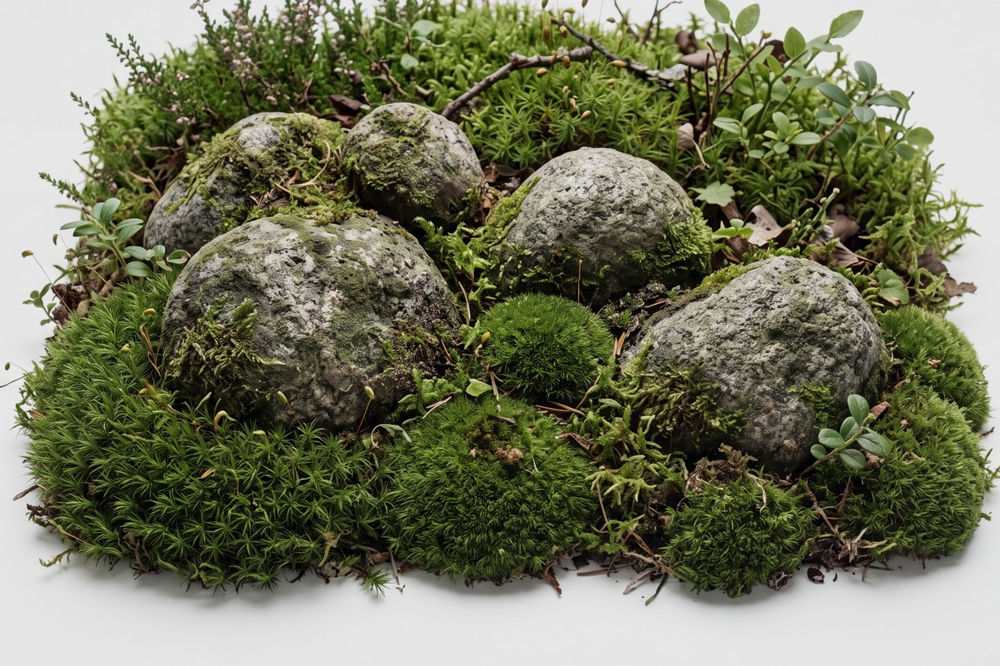
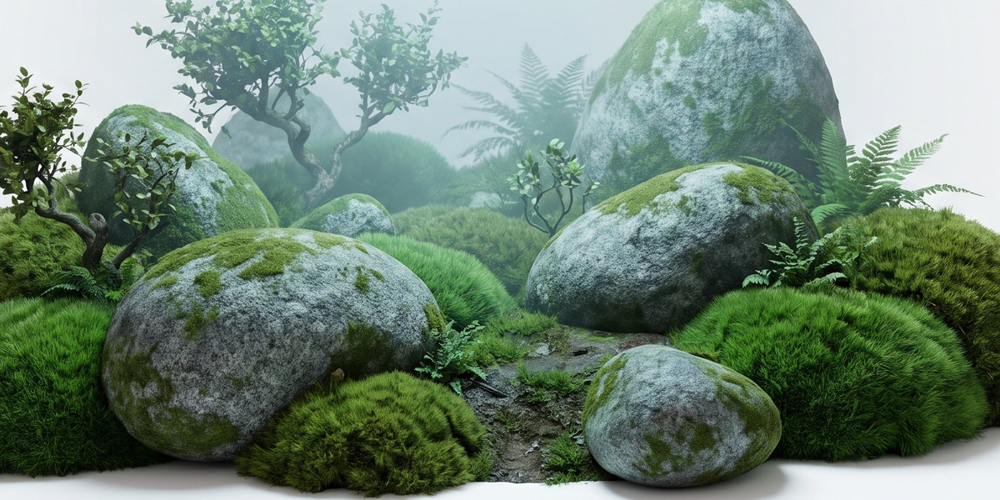

My Motto

My Motto
A VIT engineer growing AI-powered products, from RAG pipelines to live, full-stack platforms.
Live Project

I'm a B.Tech Computer Science student at VIT (Class of '29), pairing software engineering with applied AI to build products people actually use.
My work spans study-analytics platforms, AI fitness coaching, civic IoT and a deep run through the modern AI stack — RAG, LoRA/PEFT, Transformers and Hugging Face fine-tuning. Alongside 30+ repositories, I've competed in Smart India Hackathon and ACM hackathons, and I stay active across five clubs and chapters at VIT.
I care about the whole loop: a calm interface, a backend that syncs across devices, and a model that makes the product smarter than a static app. The goal — become a software engineer specialising in AI-powered applications.
Currently learningData Structures & Algorithms · JavaScript · Tailwind CSS · Deep Learning · NLP
A study-tracking platform with subject analytics, a full month-view calendar and cross-device sync — fronted by a cinematic 3D landing. Deployed on Firebase.
A smart-city platform exploring connected urban systems and data flows, built end-to-end in TypeScript.
A water-monitoring solution built for Smart India Hackathon (PS SIH26015) — connected sensing and reporting, aimed at a real district pilot.
An AI gym and fitness companion — workout modules and an AI coach that guides sessions and adapts to the user's routine.
A Web3 command-line tool for transparent, decentralized systems — bringing verifiability and trust to distributed workflows.
A deep run through the modern AI stack — RAG pipelines, LoRA/QLoRA and PEFT fine-tuning, Transformer internals, LangChain & LangGraph, and Hugging Face.
+ ARES cyber-physical mesh, Java Pet Scheduler, 100 Days of Python and 30+ more repositories — browse GitHub ↗
Consistent, hands-on building across 30+ repositories, drawn as a living grove where taller stems mean busier days. It's an illustrative view of an active commit rhythm, not exact counts.
14 credentials across AI, engineering and foundations.
Active across five clubs and chapters at VIT — spanning AI/ML, finance and markets, cloud, entrepreneurship and applied mathematics.